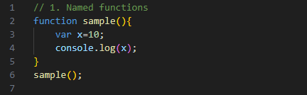
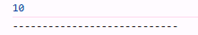
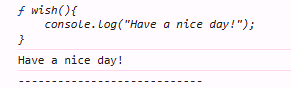
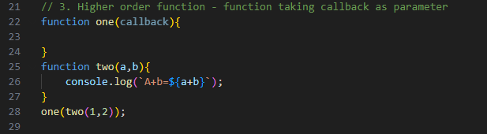
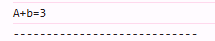
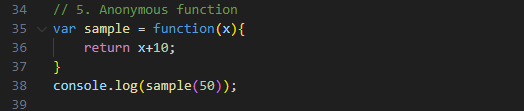
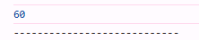
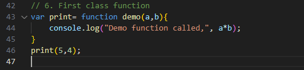

Named functions

Callback functions


Higher order functions

Lower order functions
The function which does not callback as parameter is called Lower order function, which is exact opposite of higher order function.
Anonymous functions

First class functions
